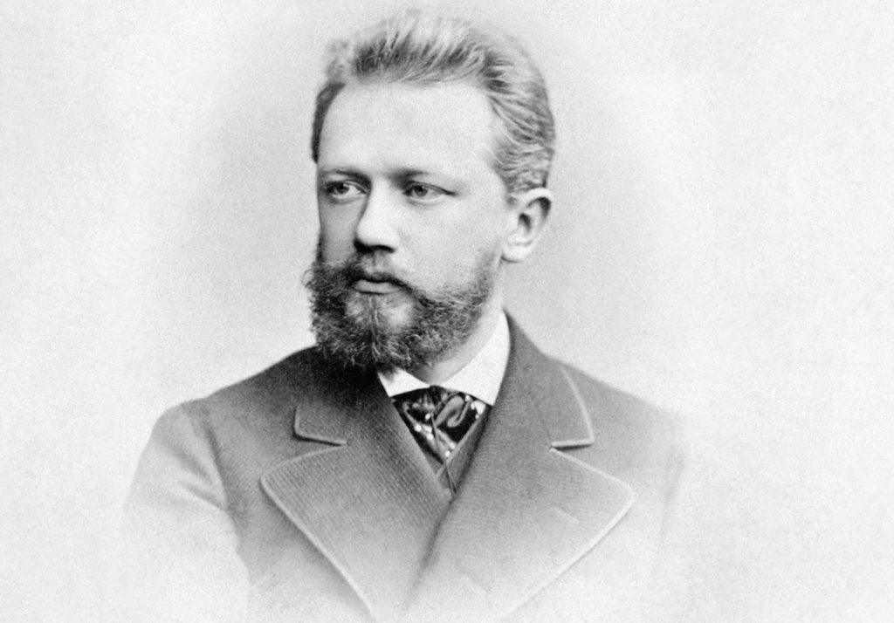
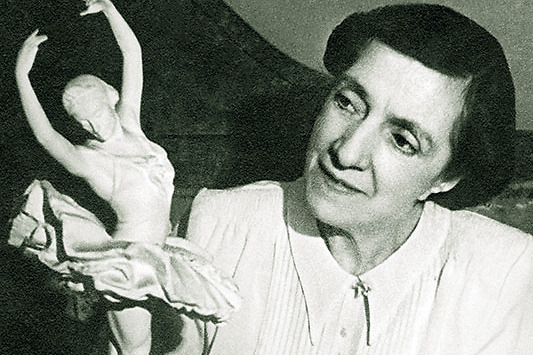
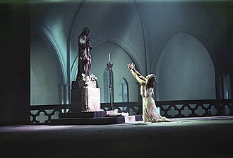

Tokom prve polovine 19. vijeka, ruski balet je prolazio kroz fazu učenja i asimilacije zapadnoevropskih trendova. Car Nikolaj I i carska porodica izdašno su finansirali teatarske škole u Sankt Peterburgu i Moskvi, pretvarajući ih u državne institucije visokog ranga. Francuski majstori poput Šarla Didloai Žila Peroa donijeli su u Rusiju duh evropskog romantizma, naglašavajući eteričnost, dramatični izraz i tehniku rada na vrhovima prstiju (špic-patike). Ruski plesači su brzo usvojili ove vještine, ali su im udahnuli specifičnu slovensku ekspresivnost i glumačku dubinu, stvarajući jedinstvenu sintezu koja će ubrzo nadrasti svoje uzore.

Druga polovina 19. vijeka rezervisana je za apsolutnu dominaciju francuskog koreografa Marijusa Petipaa, koji je u teatru Marijinski postavio temelje onoga što danas nazivamo vrhuncem klasičnog baleta. Petipa je stvorio strogu strukturu velikih baletskih predstava, uvodeći raskošne scenografije, simetrične formacije ansambla i virtuozni oblik plesa poznat kao grand pas de deux. Ključni istorijski momenat bila je njegova saradnja sa kompozitorom Petrom Iljičem Čajkovskim. Kroz remek-djela Uspavana ljepotica, Labudovo jezero i Krcko Oraščić, baletska muzika je po prvi put prestala da bude obična ritmička pratnja plesačima i postala duboko simfonijsko i dramsko djelo.
Na prelazu u 20. vijek, ruski balet je proživio estetsku revoluciju zahvaljujući vizionaru Sergeju Djagiljevu i njegovoj privatnoj trupi Ballets Russes (Ruski baleti). Djagiljev je odbacio akademske šablone 19. vijeka i na scenu u Parizu donio koncept "totalne umjetnosti", spajajući avangardne koreografe, kompozitore i slikare. Koreograf Mihail Fokin je skratio formu baleta na jednočinke i oslobodio pokret tijela, dok je kompozitor Igor Stravinski unio revolucionarni ritam i modernizam kroz predstave Žar-ptica, Petruška i Posvećenje proljeća. Ova trupa je trajno emancipovala muški ples i radikalno transformisala modernu zapadnu umjetnost.

Nakon Oktobarske revolucije 1917. godine, sovjetska vlast je prvobitno sumnjičavo gledala na balet kao na buržujski luksuz, ali je ubrzo prepoznala njegov potencijal za državnu propagandu. Ključnu ulogu u očuvanju tradicije odigrala je balerina i pedagog Agripina Vaganova, koja je naučno sistematizovala rusku baletsku tehniku, stvorivši svjetski poznatu "metodu Vaganove". Stil sovjetskog baleta se prilagodio doktrini socijalističkog realizma, stavljajući naglasak na herojstvo, atletizam i grandioznost. Iz tog perioda rođena su epska djela poput Romea i Julije Sergeja Prokofjeva i monumentalnog SpartakaArama Hačaturjana.

/>Sredinom i u drugoj polovini 20. vijeka, tokom Hladnog rata, sovjetski balet je postao glavno oružje kulturne diplomatije. Turneje teatara Bolšoj i Kirov (Marijinski)šokirale su zapadnu publiku tehničkim savršenstvom i harizmom zvijezda poput Maje Plisecke. Međutim, stroga državna kontrola i umjetnička izolacija unutar SSSR-a natjerale su neke od najvećih plesača vijeka na drastične korake. Spektakularni prebjezi zvijezda kao što su Rudolf Nurejev, Natalija Makarova i Mihail Barišnjikov na Zapad ne samo da su uzdrmali političku scenu, već su direktno udahnuli novi život zapadnoevropskim i američkim baletskim trupama.